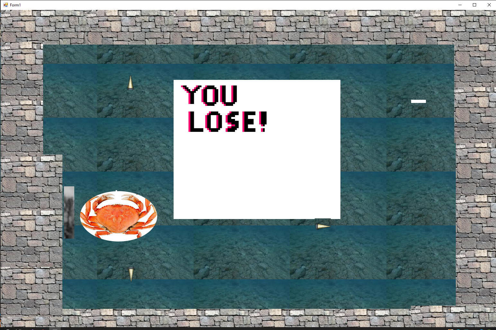

Home
About Me
Product
VB Toturials
My Resume
Ocean Game
From the creators of AWAY, brings you The Ocean game. Fight your way through evil crabs that want to keep you
special shell!
Purchasing Information
If you would like to purchase the Ocean Game for $4.99, Email us at CreatureStudios@MMMMM.com, or call 000,000,0000.
How to Win
You win the Ocean Game by "killing" all of the crabs on the map, AND by obtaining the shell in the bottom right.
Here is picture of what that looks like.
How to lose
Losing in games are not fun, but at the same time it's what makes it fun. In the Ocean game you lose by coming into contact
with the main crab's projectiles, or having contact with the hermit crabs, which can be difficult to avoid on the first or second play through. You also MUST take out the crab in order
to make the shell apear so you can get it. here is a picture of what the losing screen looks like

Controls
As with other games, movement controls are W, A, S, D, OR Up, Down, Left, Right. Your projectiles are also Z, X, C and V. Here is A picture of the controls and
intructions screen that is at the start of the game.
Other Images